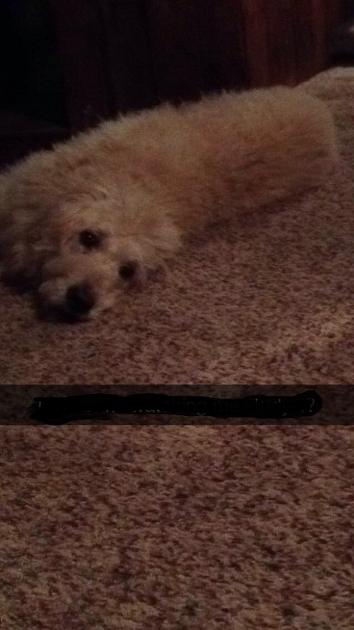

<!DOCTYPE html>
<html>
<body style="background-color:teal;">

<link href="https://fonts.googleapis.com/css?family=caveat brush" rel="stylesheet">

</body>
</html>
	
	<!DOCTYPE html>
<html>
<style>
div {height:50px;width:100%;}
</style>
<body>
<h1> <font face="Curier New."> <font size="7"> Cheerio </h1>


<div style="background-color:#000000"></div>
<div style="background-color:#404040"></div>
<div style="background-color:#808080"></div>
<div style="background-color:#c0c0c0"></div>
<font size="4">
<h3 style="color:#000000"><b> Links: </b></h3> <ul type="bullet type">
	<li><a href="Tucker.html">(Tucker)</a>
	<li><a href="Remy.html">(Remy)</a>
	<li><a href="first.html">(Homepage)</a> </ul>
	
<h2 style="color:#404040">Cheerio was the best dog known to man.</h2>
<h4 style="color:#c0c0c0">Below this is a picture of my first dog, Cheerio. He gave anyone unconditional love, and he was very intelegent. He was a labradoodle, which if you didn't know is part lab, part poodle. My family got him when I was 6 years old. Unfortunately, he had cancer last year and we had to put him down. He was man's best friend. He knew the world squirrel, camp, ride, boat, and some other words that got him excited. Cheerio could even open up doors! He was so cool. I miss him terribly. </h4>
<p> </p>



</body>
</html>
